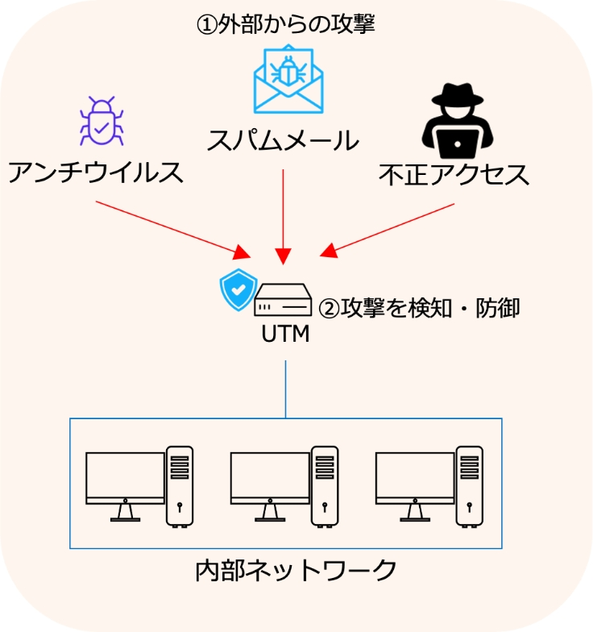
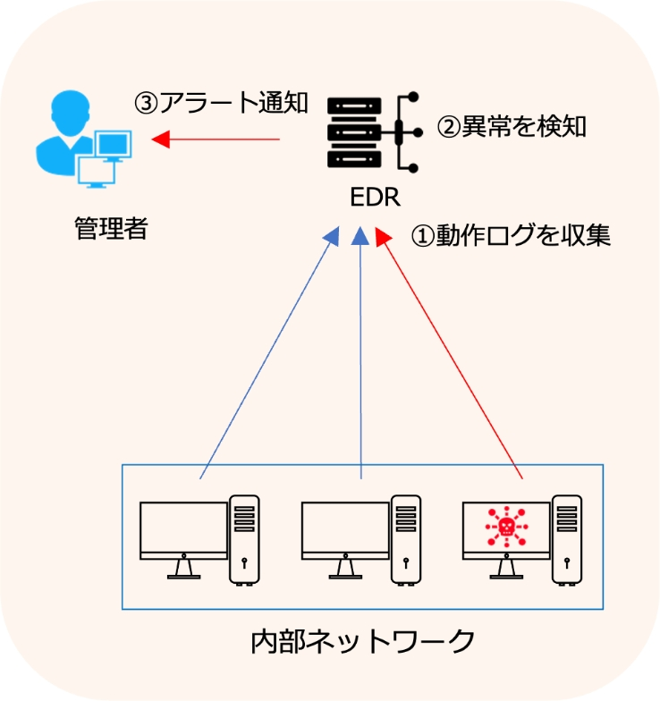

3-1-1. UTM、EDRの概要
サイバーセキュリティ対策は、大企業のみならず中小企業においても重要視されています。特に、ランサムウェアなどのサイバー攻撃のリスクが高まっており、中小企業も十分な対策を講じる必要があります。本テキストの対象読者は、UTMとEDR相当機能の対策は導入済みであることを想定しています。しかしながら、セキュリティの脅威は常に進化しており、新たな攻撃手法や脆弱性が発見されることがあります。ここでは、UTM、EDRの機能について振り返りますが、さらなるセキュリティ対策についての詳細は本テキストの後半で説明します。
UTM（Unified Threat Management）
UTMは、日本語で「統合脅威管理」と訳されます。UTMは複数のセキュリティ機能を一つの機器に集約したもので、ネットワーク全体のトラフィックを監視・管理します。UTMには、ファイアウォール、侵入検知システム、ウイルス対策などが統合されており、内部ネットワークに対する外部からの侵入や攻撃を防御します。そのため、企業・組織内のネットワークセキュリティ対策としてUTMの導入は有効な手段です。
EDR（Endpoint Detection and Response）
EDRは、エンドポイント（PC、スマートフォン、サーバなど）における脅威の検知および対応を可能にします。従来のアンチウイルスソフトウェアでは、ウイルス定義ファイルにないマルウェアは検知できませんでしたが、EDRでは、エンドポイント上の不審な動作を検知することができます。また、検知した脅威に対して、悪意のあるプロセスの終了、感染したエンドポイントの隔離などの適切な対応を行います。そのため、EDRを活用することで、セキュリティインシデントの早期発見と迅速な対応が可能になり、エンドポイントの保護が強化されます。
【UTMの動作】
【EDRの動作】
図15. UTM、EDRの概要図